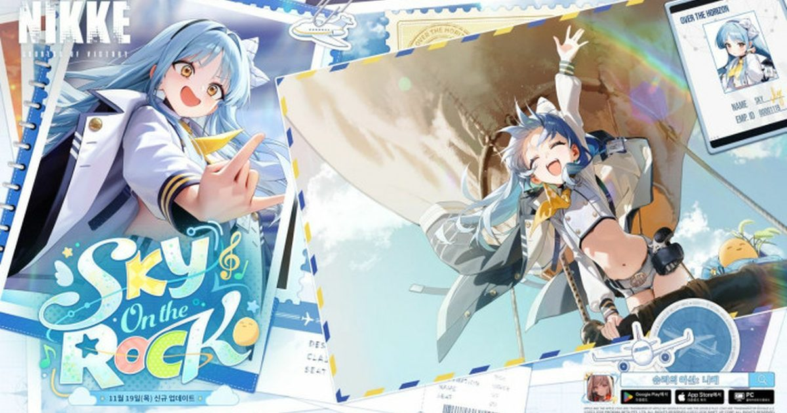

2026-11-19 · 角色攻略 / 数值拆解

11 月 19 日维护后，《胜利女神：NIKKE》上线了新 SSR——Sky，Elysion「Over the Horizon」小队的队长， 爆裂 I、支持者、铁甲代码、狙击枪「Jet Stream」。卡池开到 12 月 3 日 04:59:59（UTC+9）， SSR 出率 4%、她自己占 2%，200 张金色里程券可以直接换。
英文攻略站的动作很快，几乎当天就出了「Build Guide」，结论统一是：堆攻击、带韧性魔方、 配贯穿型主 C、免疫要「在 BOSS 放危险减益前卡准时机」。 这几句话里有一句是错的。而且错的不是细节，是对她整个技能组的理解方向。 把她三个被动/爆裂技能的持续时间与冷却摆到一起算一遍，你会发现这个角色的设计意图 和攻略站写的完全不是一回事。
技能 1「Taxiway to Heaven」：保持满蓄状态 1 秒以上时， 给全体队友挂一层「负面效果免疫 1 次，持续 5 秒」，一场战斗只能用 3 次； 同时自身获得贯穿特化，贯穿伤害 +60%，持续 40 秒。
技能 2「Runway to Hell」：进入 Full Burst 时，全队获得相当于 Sky 自身攻击力 20% 的攻击力加成，持续 10 秒； 而当「High Tension」状态结束时，全队被挂上「Low Tension」—— 攻击力下降 Sky 攻击力的 10%，持续 20 秒，同时 Sky 自己眩晕 20 秒。
爆裂「FLY! ROCK!」：全队获得「High Tension」，贯穿伤害 +15%， 最多叠 3 层，每层持续 35 秒；自身攻击力 +50%，持续 35 秒。冷却 40 秒。 武器是狙击枪，弹匣 6 发，装填 2.17 秒，满蓄 250% 伤害。
看到这里，一个很朴素的问题就出来了：35 秒的持续时间，配 40 秒的冷却， 那第二层怎么叠上去？
她第一次开爆裂，全队获得贯穿 +15%，计时 35 秒。35 秒一到，这一层消失。 而她的下一次爆裂要等 40 秒。中间有 5 秒的空窗，第一层已经没了，第二层才来。 所以除非队里能提供爆裂冷却缩减，把间隔压到 35 秒以内， 否则「最多叠 3 层」这个上限在整个战斗过程中永远不会被触发。
这意味着她给全队提供的贯穿增益，实际值是 +15%，不是 +45%。 她自己的 +50% 攻击力同样是 35 秒一轮、每轮空 5 秒。 一句话：她的技能文本写的是「可叠加的持续增益」，实际执行的是「覆盖率 87% 的单层增益」。 这不是削弱，是标错价。
我翻了一圈当天的英文攻略，没有一篇提到这个 5 秒的缺口。 大多数攻略直接抄了技能描述里的「stacks up to three times」， 然后在配队建议里默认她已经叠到三层——按三层算，她的价值被高估了将近三倍。
这是这个角色最容易被误读的地方。绝大多数攻略把技能 1 理解成「团队减益防护」， 建议「在 BOSS 放危险技能前卡满蓄」。但真正的死线不在 BOSS 抬手，在她自己的 35 秒。
逻辑链是这样的：她开爆裂 → 全队拿到 High Tension（35 秒）→ 35 秒后 High Tension 到期 → 触发技能 2 的负面分支：全队减攻 20 秒，她自己眩晕 20 秒。 这个负面效果是她自己的技能造成的，跟 BOSS 一点关系都没有。 而技能 1 的免疫，恰好可以在那个瞬间把这一层减益吃掉一次。
于是问题变成了算术：免疫一场 3 次，而她的爆裂每 40 秒一次。 一场三分钟的 BOSS 战，她至少能开 4 次爆裂，运气好能到 5 次。 第 4 次开始，那 20 秒眩晕就一定会落到她头上。 换句话说，「3 次」这个数字不是设计给你的容错空间，是设计给你的计时器—— 它告诉你这场战斗里，你能安全地输出三次，第四次开始要自己想办法。
再叠一层代价：触发免疫的条件是「保持满蓄 1 秒以上」。 狙击枪满蓄本身就是一发子弹的节奏，你要在满蓄状态多挂 1 秒，就是少打一发、少充一点爆裂槽。 为了给自己擦屁股，你还得让整个队伍的爆裂循环慢一点。 这个设计的精妙程度和它的不划算程度，是同一件事。
技能 2 那个「全队攻击力 -10%」，很多人看到就慌了。 但注意基数——是以 Sky 自己的攻击力为基准的 10%。 同理，她的正面增益「+20% 攻击力」也是以她自身攻击力为基准。
辅助角色的攻击力天生低于输出角色，假设她攻击力五万（辅助里的中等水平）， 那么 20% 就是一万。主 C 攻击力三十万的话，这一万大约等于 3.3% 的实际提升—— 对一个「支持者」来说，这个数字相当寒酸。而那个 -10% 的减益，也就是五千点， 放在三十万的主 C 身上几乎看不出来。
所以真正的代价不是减攻，是她自己那 20 秒眩晕。 在 NIKKE 的战斗结构里，眩晕意味着不能攻击、不能蓄力、不参与爆裂槽累积—— 对一个爆裂 I 角色来说，这 20 秒直接抽掉了队伍循环的一环。 一旦晕在关键节点（比如刚好卡在下一轮 Full Burst 之前），整条链就断了。
这也是为什么韩服那边的评价相当直接：有玩家认为她的实际表现 「像是故意做得让人别误会去抽」。这话说得狠，但从三个数字的咬合关系看，不算冤枉。
最后一个结构性问题。标准五人队是 1 个爆裂 I、2 个爆裂 II、2 个爆裂 III。 而她的冷却 40 秒，想维持 20 秒一次 Full Burst，就必须再带一个爆裂 I。 于是阵容变成 2 个爆裂 I + 1 个爆裂 II + 2 个爆裂 III。
也就是说，她占掉的那个位置，是从爆裂 II 或爆裂 III 里扣出来的。 而你换到的东西是：全队 +15% 贯穿伤害、一个 3.3% 量级的攻击加成、 以及每场三次的负面免疫。前提还是你的主 C 必须打贯穿，且 BOSS 必须有多个可命中的判定点。 三个条件同时成立，这笔交易才成立。
这也是为什么她的适用面窄得可怕：多部位 BOSS + 贯穿型主 C + 愿意再塞一个爆裂 I。 少一个条件，她的收益就掉到「不如随便带个常规辅助」的水平。 单部位 BOSS 上她几乎等于白板——贯穿伤害加成在单判定点上没有额外的命中可打。
我们的观察：Sky 是目前为止最典型的「技能文本很豪华、数值咬合很糟糕」的角色。 60% 贯穿、15% 全队贯穿、3 层叠加、20% 攻击力——每一个数字单拎出来都像 T1。 但它们被放进同一条 40 秒的时间轴里，就互相抵消了。 这不是数值低，是数值不自洽。前者调一调就好，后者得重做。
我们的观点：把冷却从 40 秒改成 35 秒，她会立刻从「奢侈品」变成「贯穿队核心」。 只需要动一个数字：35 秒冷却对上 35 秒持续，第二层就能无缝接上，三层也真的能叠； 免疫的 3 次上限同时变得合理（一场 5 次爆裂，3 次安全，2 次要吃惩罚）。 现在这个 40 秒，像是把「高风险高回报」写成了「高风险低回报」。 而抽卡游戏里最不该出现的，就是让玩家为一个自己算不明白的代价付钱。
我们的案例对比：拿丽塔这类常规爆裂 I 辅助来比。 她们的循环是 20 秒一轮、增益挂在循环里、不需要玩家额外操作。 Sky 的增益是 40 秒一轮、需要卡满蓄、需要卡 35 秒的死线、还会反噬。 操作成本翻了三倍，收益却只有 15% 贯穿这一个亮点。 唯一能说服我抽她的理由是「你的贯穿主 C 已经养到极限，缺的正好是这 15%」—— 除此之外，任何情况下都该先补爆裂 I 的循环位。
我们的实验：按「三分钟 BOSS 战」做了一次纸面推演。 假设她开爆裂 4 次，前 3 次用满蓄卡掉 Low Tension，第 4 次吃 20 秒眩晕。 结果是她贡献了约 60 秒的真正贯穿覆盖（4×15 秒的爆发窗口）， 外加最后 20 秒的完全离线。换算成队伍总伤害，她的净贡献大约在一个中等偏下的辅助位水平。 而如果你把那个位置换成一个稳定的攻击力辅助，收益更平滑、也更不需要盯计时器。 结论：她不是不能用，是用她需要你打得比平时更精确，回报却比平时更低。
我们的评分理由：6.2 分评的是「角色设计与数值咬合」，不是评立绘和剧情。 加分项：人设完整度很高，Over the Horizon 小队「爱摇滚也爱飞」的设定做出了具体的性格 （活动剧情里那个反复上门、只为了坐一次热气球的小女孩，是全篇最好的段落）； High Tension / Low Tension 这套正负反馈的设计概念本身很大胆， 在抽卡游戏里敢让角色自带代价的不多；贯穿特化这个定位也确实填了一个空位。 扣分项：三个核心数字互相打架，35 秒持续对 40 秒冷却让「三层叠加」成为死文本； 3 次免疫的上限与她自己的 35 秒周期不匹配，第 4 次爆裂必然反噬； 攻击力加成以辅助自身为基准，实际收益被压到个位数百分比； 40 秒冷却强迫队伍牺牲一个爆裂 II / III 的位置。 一句话总结：这是一个概念比数值更好的角色——她值得被记住，但不值得被抽。
抽卡建议：官方这次没有给她打「限定」标记，按 NIKKE 的惯例， 这类角色在卡池结束后会进常规池，可以等歪。 而接下来是十二月的圣诞与新年限定档——把 200 张金票留着，比现在换她更划算。 同期活动「SKY ON THE ROCK」开到 12 月 3 日，七日登录「FLIGHT D-DAY」送招募券； 周末（11 月 20 日 12:00 至 22 日 23:59，UTC+9）还有电属性弱点的协同作战 BOSS「Land Eater」。 冠军竞技场第 2 赛季也在今天开启，只对特别竞技场前八名开放。